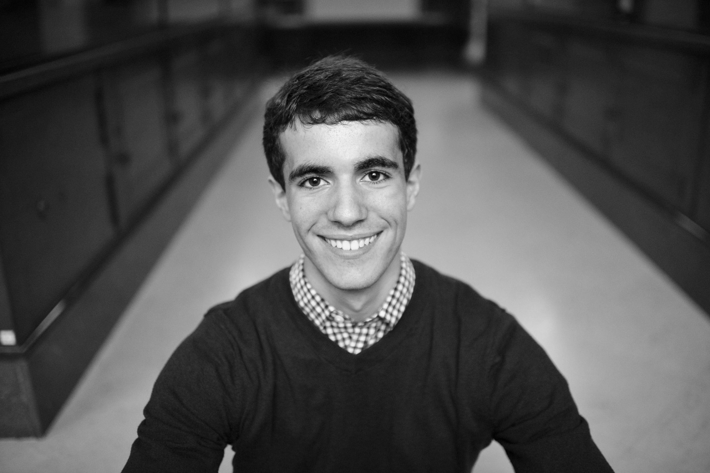

Matthew Greenlaw

Summary
Front end developer and structural analyst
Education
-
Master's of Aerospace Engineering
- Worcester Polytechnic Insitute (2021 - 2022)
-
Master's of Mechanical Engineering - Northeastern University
(2015 - 2020)
Work Experience
- Front-End Developer - Pratt & Whitney (2023-2024)
- Supported web app that manages workflows for jet engine defects
- Resolved multiple bugs
-
Skills Developed:
- React JS, HTML, CSS, antD
- Applying SOLID principles for test-driven development
Skills
Awards and Certifications
- Gates Millennium Scholarship
- Pratt & Whitney - Accountability Award